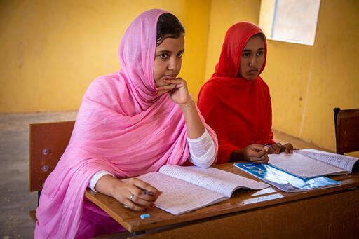
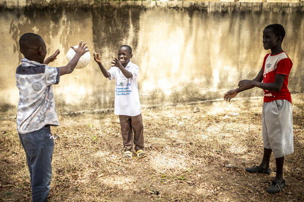
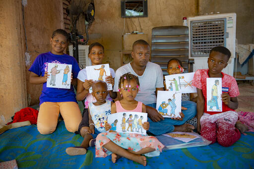

Les montants et leur utilité
100€ permettent la réintégration scolaire d’un enfant avec distribution d’un kit scolaire
5000€ permettent la réintégration de 50 enfants, soit tous les enfants concernés du projet
sur une année
250€ permettent d’assurer la recherche et réunification familiale (interne et transfrontalière) d’un
enfant
760€ permettent d’assurer la prise en charge transitoire multisectorielle d’un enfant, y compris son
appui psychosocial

30,000 filles, garçons, hommes et femmes
Les filles et garçons étrangers en mobilité (de
transit sortant ou de retour rentrant au Mali)
Les filles et garçons migrants maliens de
retour au Mali
Les filles et les garçons en mobilité interne
(travailleurs domestiques, saisonnières,
travailleurs dans les sites d’orpaillage et dans
les zones agricoles, en apprentissage coranique,
victimes des conflits armés et
intercommunautaires)
Les filles et les garçons en mobilité les plus
exposés ou affectés par la pandémie
(travailleurs domestiques dans des ménages
affectés par le Covid-19, enfants en détresse,
enfants en situation de rue, enfants en centres
et familles d’accueil, enfants en mobilité dans
des zones frontalières…).

3 objectifs principaux de cette mission
Les filles et les garçons en mobilité bénéficient d’une protection durable
tout au long de leur parcours migratoire grâce à des services mobiles multisectorielles
coordonnées
Les filles et les garçons en mobilité sont orientés pour une prise en charge
alternative et réintégration durable
Les filles et garçons en mobilité et dans les communautés, sont sensibilisés aux
risques de la séparation familiale et de la mobilité précoce, sur la prévention de la violence et de
l'exploitation et sur les services disponibles
UNICEF en partenariat avec l'IESEG
Alméry, Valentine, Hilary, Caroline, Olivier et Amaury